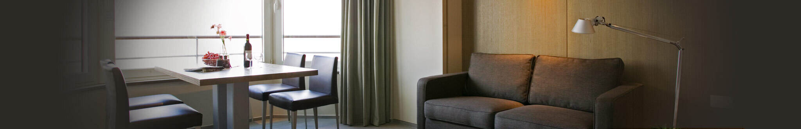
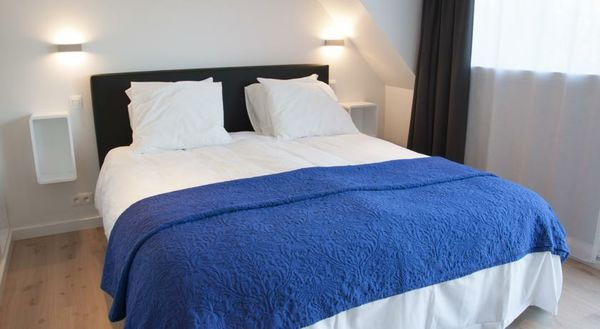
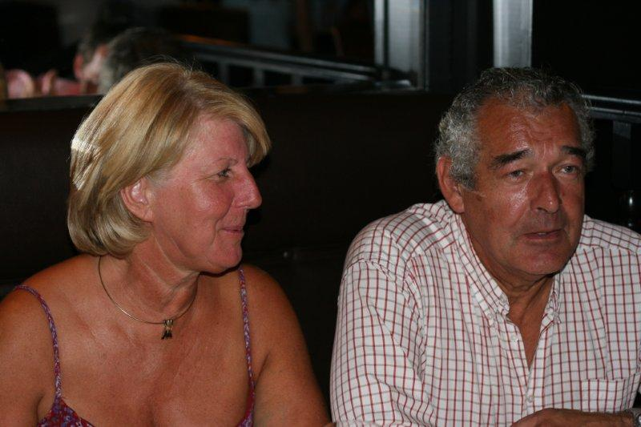

Streetview · Zeedijk-Heist · 8301 Knokke-Heist
Section 1 · the seafront strip
Building numbers on the Zeedijk run west → east. Bartholomeus is pinned at 0 m (Zeedijk-Heist 267 [1]). Each postcard sits at its real distance, scaled at ≈ 1.6 px per metre. Scroll horizontally to see the full strip.

Section 2 · one block inland


Section 3 · off the map
Both of these are on the Knokke-Heist coast brand but neither is walkable to Bartholomeus. Plan for tram or taxi back after dinner.
Section 4 · practicals before you book
Tiny inventory
The walkable list adds up to maybe 30 keys total. Aquavit, Morpheus, St. Yves, B-eaufort all sell out fast for Bartholomeus weekend slots — lock lodging the moment dinner is confirmed.
Parking
Bristol charges €20/day for parking [5]. Several seafront apartments include free private parking. B&B B-eaufort explicitly has none [14].
Coast tram (Kusttram)
The Kusttram runs the full Belgian coast and stops in Heist. Useful if you end up sleeping in Knokke centre, Duinbergen, or Het Zoute and want to skip the taxi after dinner.
Direction matters
Bartholomeus' counter seats 18 [1], so most diners spill east toward Brasserie Bristol or west toward Studio Heyst on the post-dinner walk — either direction stays on the lit promenade.